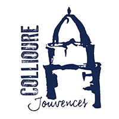
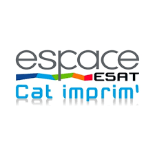
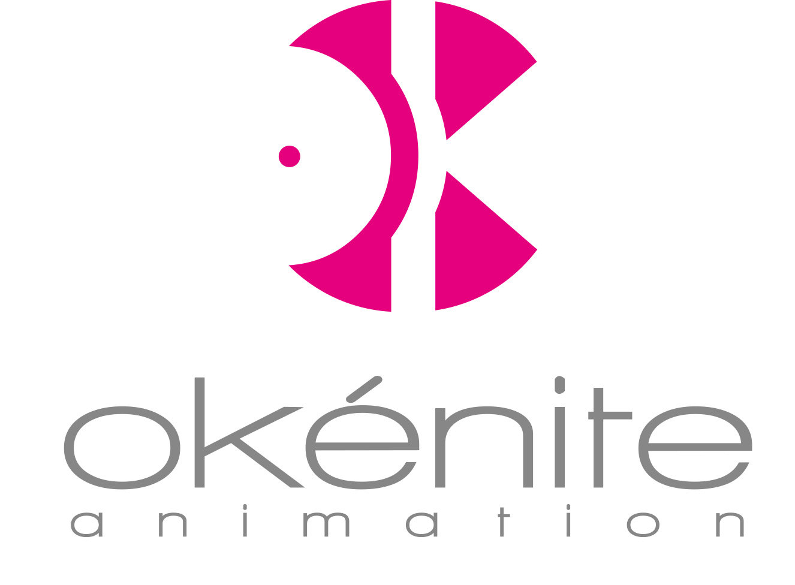
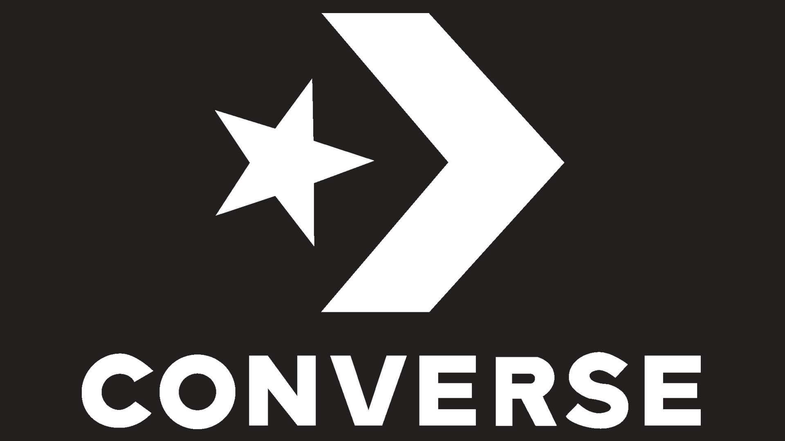
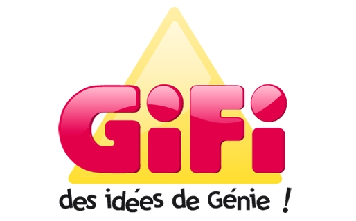

Mes expériences
-

Vendeuse chez Jouvences
Juillet/Août 2016
Jouvences est une boutique de décoration situé dans le sud de la France à Collioure. Un lieu très touristique j'ai du m'adapter celon la langue des clients pour s'attisfaire leurs besoins. Le stock se situant dans la deuxième boutiques à un magasin que celui que je m'occupais j'ai du jonglé entre le réassort, la surveillance de la boutique et le besoin de la clientèle.
-

Stage chez Cat'Imprim
Décembre 2016
Cat'Imprim est une imprimerie pas comme les autres, elle emplois des personnes avec différents handicaptes basé sur Troyes. Pendant une semaine j'ai vu comment ils s'adaptaient aux différenets handicaptes et le rendu des prestations est étonnante! J'ai beaucoup apris sur l'adaptation et la patience mais également sur le regard faussé que les gens peuvent avoir sur l'handicapte.
-

Stage chez Okenite Animation
Juin 2017
Okenite Animation situé à Rosière-Près-De-Troyes est une agence de communication. J'ai été dans le pôle print. J'ai beaucoup appris sur le travail en agence et les relations avec la clientèle.
-
Vendeuse chez Jouvences
Juillet/Août 2017
J'ai été reprise en tant que vendeuse chez Jouvences.
-
Animatrice aux bulles enchantées de Troyes
Décembre 2018
Les bulles enchantées de Troyes est un nouveau concept créé par Festilight. J'ai du acceuillir et guider les vistiteurs de toutes âges ainsi que d'animé les différents ateliers présents pour les écoles, petits mais aussi les grands. J'ai du m'adapter à une clientèle très large et être très organisé afin que tout se déroule correctement.
-

Vendeuse/caissière/Étiqueteuse chez Converse
Janvier 2019
J'ai travaillé pendant les soldes d'hivers chez converse. J'ai appris à avoir un bon rythme, s'occupé des clients mais également à remettre les rayons en ordre et tenir le magasin propre. J'ai travaillé avec une équipe d'environ 10 personnes.
-

Inventoriste chez Gifi
1er mars 2019
Pour l'inventaire de gifi, j'ai du faire preuve de patience et rigueur car c'est un travail précis et long.